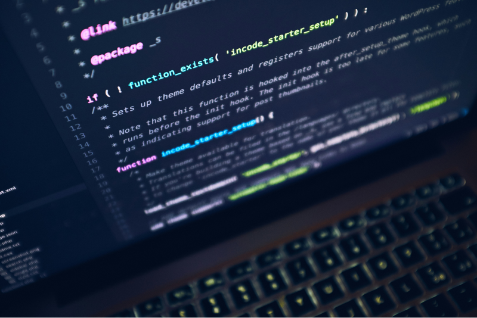

Cantilever est une conférence pour les codeurs qui pensent comme des artistes
15—17 Août 2026
Bienvenue à Cantilever, la conférence qui réunit les esprits créatifs du monde du code. Rejoignez-nous pour trois jours d'ateliers, de conférences et de réseautage avec les esprits les plus innovants de l'industrie.

Programme de la Conférence
- Introduction à la programmation créative
- Ateliers interactifs sur l'art numérique
- Sessions de codage en direct
- Conférences sur les technologies émergentes
Nos Orateurs
- Marie Curie - Ingénieure Logiciel
- Léonard de Vinci - Artiste Numérique
- Vincent Van Gogh - Pionnier en Programmation
Témoignages des Participants
"Cette conférence a changé ma vision du code et m'a permis de connecter avec des gens formidables." — Jeanne Martin, Développeuse Web
"Un événement inspirant, les ateliers sont incroyablement bien organisés." — Paul Dupont, Designer UI/UX